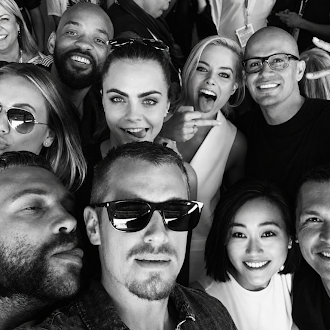
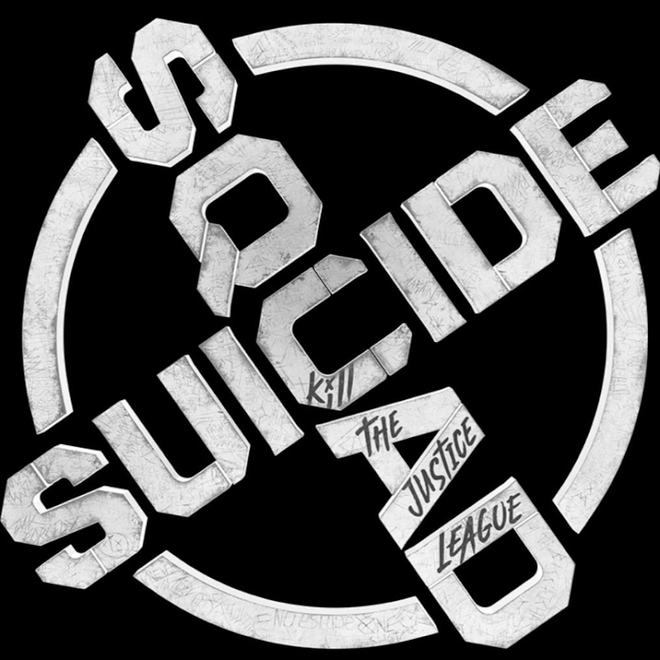

Jared Jeto e Margot Robie
Jared Leto enviou um rato vivo para Margot Robbie durante as gravações. Ela ficou com o animal e o chamou de Rat Rat! Eles construiram uma amizade forte nos bastidores apesar da relação tóxica do Coringa com a Arelquina.
Um time para executar missões governamentais secretas, perigosas e de alto risco usando super vilões descartáveis.
Jared Leto enviou um rato vivo para Margot Robbie durante as gravações. Ela ficou com o animal e o chamou de Rat Rat! Eles construiram uma amizade forte nos bastidores apesar da relação tóxica do Coringa com a Arelquina.

Apesar de viverem criminosos caóticos em Esquadrão Suicida (2016), o elenco se divertia bastante nos bastidores. Margot Robbie, Will Smith e os demais atores brincavam e passavam tempo juntos, criando uma amizade que contrastava com as brigas e confusões de seus personagens no filme.

CLIQUE AQUI PARA ABRIR O ALBUM
A trilha sonora de Esquadrão Suicida (2016) foi uma das partes mais marcantes do filme e teve um papel importante na construção do estilo visual e da personalidade dos personagens.